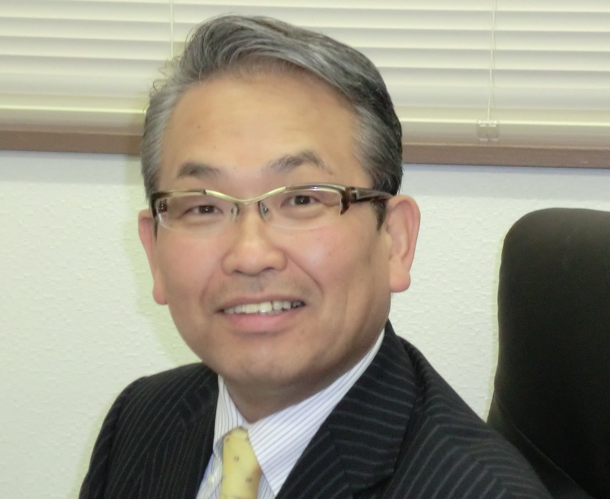
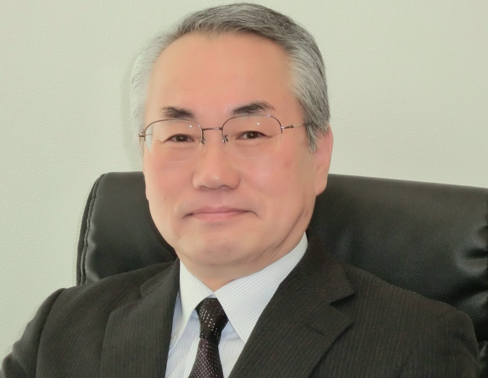

代表社員・所長
松田 純一
税理士
昭和37年 山形県米沢市生まれ 職歴
- 平成22年 8月 税理士登録 ＴＫＣ全国会入会
- 平成22年11月 米沢市に松田純一税理士事務所を開設
- 平成26年 8月 税理士法人松田パートナーズ会計を現住所に設立 代表社員就任
山形県米沢市の税理士法人 松田パートナーズ会計
会社発展の全てをサポートし、経営者の皆様の悩みを解決いたします。
元気な人づくり、企業づくり、町づくり
ＴＫＣグループのホームページに当法人代表社員へのインタビューが掲載されました。
このたび「税理士法人松田佐々木会計」は、令和２年７月１日より社名を『税理士法人松田パートナーズ会計』と改称させていただくこととなりました。
これを機に職員一同気持ちを新たにし、皆様の信頼にお応えできるよう倍旧の努力をしてまいる所存でございます。今後とも一層の御支援を賜りますようお願い申し上げます。
当法人のモットー
元気な人づくり、
企業づくり、町づくり

ＴＫＣ全国会の基本理念「自利利他」
（創設者 飯塚毅 揮毫）

代表社員・所長
税理士
昭和37年 山形県米沢市生まれ 職歴

副所長
税理士
昭和30年 山形県米沢市生まれ 職歴
・税務代理
・税務書類の作成
・税務相談
決算指導及び、税務署、都道府県、市町村提出用の各種申告書を作成いたします。
原則、毎月1回訪問し、記帳の誤りがないか監査をするとともに、翌月には月次試算表をお渡しします。
現金出納帳、伝票、給与台帳などの資料をお客様の方で作成していただき、当社で会計ソフトへ入力し、仕訳日記帳、総勘定元帳、貸借対照表、損益計算書などの書類を作成いたします。
・資金計画策定支援
・経営計画策定支援
・業績検討会の開催
・経営承継支援
・創業支援
・融資先の紹介
・自己株式の評価
・土地の評価
・納税の猶予の手続
元統括国税調査官である所長が立ち会いを行い、本来支払うべき税金以上に請求されることがないよう、また、問題を指摘された場合の調整代行をいたします。
当法人を明るさと元気を発信できるコミュニティーの中心的存在とする。
ＴＫＣ全国会の基本理念である「自利利他」について、ＴＫＣ全国会創設者飯塚毅は次のように述べています。
大乗仏教の経論には「自利利他」の語が実に頻繁に登場する。解釈にも諸説がある。その中で私は「自利とは利他をいう」（最澄伝教大師伝）と解するのが最も正しいと信ずる。
仏教哲学の精髄は「相即の論理」である。般若心経は「色即是空」と説くが、それは「色」を滅して「空」に至るのではなく、「色そのままに空」であるという真理を表現している。
同様に「自利とは利他をいう」とは、「利他」のまっただ中で「自利」を覚知すること、すなわち「自利即利他」の意味である。他の説のごとく「自利と、利他と」といった並列の関係ではない。
そう解すれば自利の「自」は、単に想念としての自己を指すものではないことが分かるだろう。それは己の主体、すなわち主人公である。
また、利他の「他」もただ他者の意ではない。己の五体はもちろん、眼耳鼻舌身意の「意」さえ含む一切の客体をいう。
世のため人のため、つまり会計人なら、職員や関与先、社会のために精進努力の生活に徹すること、それがそのまま自利すなわち本当の自分の喜びであり幸福なのだ。
そのような心境に立ち至り、かかる本物の人物となって社会と大衆に奉仕することができれば、人は心からの生き甲斐を感じるはずである。